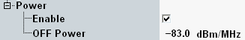

Power Limits
For TDD signals, 3GPP defines an upper limit for the power transmitted in OFF periods between ON periods. Between an ON period and an OFF period, a transient period of 17 µs is defined for power ramping. The OFF power must be measured for the entire power-OFF duration between two transient periods.
You can set the limit in the configuration dialog.

Power limit settings
The limit defined by 3GPP depends on the carrier frequency, as shown in the following table.